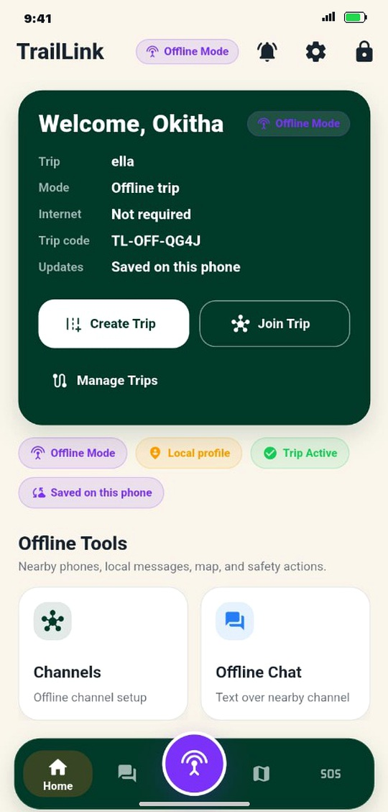

Zero-Infrastructure Mesh
Establishes unprivileged peer-to-peer Wi-Fi Direct and BLE clustering directly across stock Android devices with no cellular, satellite, or external radio dongles required.
Terrestrial cellular networks collapse during natural disasters and fail to cover remote wilderness gorges. TrailLink establishes an unprivileged, user-space peer-to-peer mobile mesh network on unmodified consumer smartphones—integrating real-time offline vector mapping, priority emergency SOS routing, store-and-forward text, live voice radio, and atomic cloud reconciliation.

Unified Subsystems
Extra Hardware (100% COTS)
Packet Delivery Ratio (20m)
SOS Multi-Wall Latency
When disaster strikes and telecom grids collapse, TrailLink establishes an autonomous, unprivileged P2P mobile mesh on unmodified consumer smartphones. Experience real-time offline mapping, priority emergency SOS, and live voice radio in action.
Establishes unprivileged peer-to-peer Wi-Fi Direct and BLE clustering directly across stock Android devices with no cellular, satellite, or external radio dongles required.
Local MBTiles vector/raster rendering paired with a dynamic 3-tier temporal coordinate freshness decay function (Fresh, Old, Stale) and real-time teammate tracking.
Live PCM-16 voice streaming over dynamic Wi-Fi Direct sockets with jitter buffering, alongside delay-tolerant AAC compressed store-and-forward voice notes.
Out-of-order queue preemption delivering sub-850ms multi-wall distress alerts, bounded by strict TTL hop-budget control, idempotent loop suppression, and bidirectional ACKs.
Explore how TrailLink's unprivileged user-space architecture translates into a life-critical mobile safety application. Tap through each subsystem to inspect the user interface in action.

The primary control dashboard establishing disconnected wilderness sessions. Generates offline trip identifiers (e.g. TL-OFF-QG4J), isolates cryptographic broadcast channels, and caches all trip state locally with zero internet dependency.
An academic investigation solving the fundamental communication void in zero-infrastructure environments without root privileges or expensive satellite hardware.
Reliable spatial orientation and rapid crisis dissemination represent indispensable operational requirements when wilderness expeditions, backcountry search-and-rescue (SAR) teams, and disaster response personnel operate beyond terrestrial telecommunications coverage. Conventional mobile navigation and messaging applications are fundamentally predicated on persistent cloud access, causing them to degrade abruptly into inert interfaces when centralized cellular infrastructure is damaged, saturated, or absent. While Mobile Ad-Hoc Network (MANET) paradigms provide theoretical routing models, deploying these protocols on commercial off-the-shelf (COTS) Android smartphones is constrained by operating-system sandboxing that prohibits raw Layer-3 packet injection without invasive root privileges.
The TrailLink research initiative addresses this technological void by designing, implementing, and empirically validating a four-tiered mobile mesh platform executing entirely in unprivileged Android user-space. Leveraging Google Nearby Connections (Bluetooth Low Energy discovery dynamically promoted to Wi-Fi Direct sockets), embedded SQLite with Write-Ahead Logging (WAL), pre-rendered offline MBTiles vector maps, and out-of-order priority emergency queuing, the platform achieves robust, real-time coordination under zero-infrastructure conditions.
A unified multi-modal platform distributing specialized safety capabilities across a shared application-layer packet bus.
Continuous GNSS ingestion, offline MBTiles vector map rendering, dynamic spatio-temporal freshness decay classification, out-of-order emergency SOS dispatching with loop suppression, and atomic SQLite-to-MongoDB cloud synchronization.
Decentralized delay-tolerant chat managing persistent SQLite outbox queues, asynchronous epidemic gossip relaying across disconnected network partitions, and end-to-end cryptographic delivery receipts.
Hybrid audio communications combining compressed AAC-LC push-to-talk voice notes for constrained links with low-latency live PCM-16 voice streaming stabilized by an adaptive Splay-Tree Jitter Buffer.
Continuous mathematical evaluation of wireless channel health yielding an operational index Q ∈ [0, 100] derived from moving-average BLE RSSI samples and round-trip transmission acknowledgments.